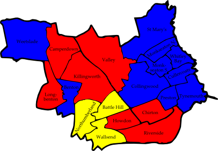
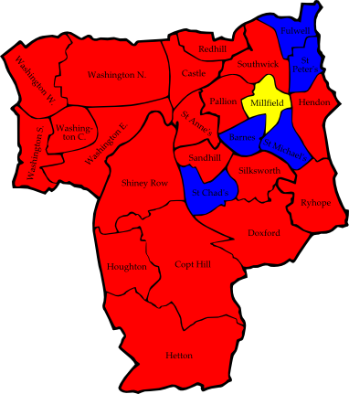

6.1 Gateshead
Birtley
|
Paul Foy | Lab | 1,161 |
| Betty Gallon | Lib | 916 |
| Andrea Gatiss | C | 179 |
Blaydon
|
Kathryn Ferdinand | Lab | 1,175 |
| Mark Gardner | LD | 726 |
| Mark Watson | C | 194 |
Bridges
|
Angela Armstrong | Lab | 858 |
| Philip Allen | LD | 323 |
| Kevin Bell | BNP | 219 |
| Adrian Anderson | C | 179 |
Chopwell and Rowlands Gill
|
Maureen Chaplin | Lab | 1,738 |
| Raymond Callender | LD | 995 |
| Allan Davidson | C | 236 |
Chowdene
|
Maureen Goldsworthy | Lab | 1,357 |
| Glenys Goodwill | LD | 720 |
| Michael Crossman | C | 579 |
Crawcrook and Greenside
|
Sally Danys | LD | 1,463 |
| Helen Hughes | Lab | 1,049 |
| Leonard Davidson | C | 207 |
Deckham
|
Martin Gannon | Lab | 1,014 |
| Gareth Johnson | LD | 453 |
| Kevin Scott | BNP | 332 |
| Trevor Murray | C | 232 |
Dunston and Teams
|
Patrick Rice | Lab | 984 |
| Elizabeth Robson | LD | 321 |
| Terrence Jopling | BNP | 242 |
| Ada Callanan | C | 162 |
| Robert Latham | Ind | 104 |
Dunston Hill and Whickham East
|
Allison Chatto | LD | 1,535 |
| Gary Haley | Lab | 1,203 |
| John Callanan | C | 262 |
Felling
|
William Dick | Lab | 1,067 |
| David Lucas | LD | 319 |
| Keith McFarlane | BNP | 203 |
| John Wraith | C | 144 |
High Fell
|
Brian Richmond | Lab | 1,031 |
| Ann McCarthy | LD | 300 |
| June Murray | C | 182 |
| Ronald Fairlamb | BNP | 174 |
| William Batty | UKIP | 143 |
Lamesley
|
Mary Foy | Lab | 1,217 |
| Andrew Dixon | Lib | 567 |
| Brian Weatherburn | Ind | 454 |
| Sheila Everatt | C | 197 |
Lobley Hill and Bensham
|
Kevin Dodds | Lab | 996 |
| Susan Craig | LD | 904 |
| George Bainbridge | BNP | 272 |
| Margaret Duddin | Ind | 181 |
| Hazel Anderson | C | 176 |
Low Fell
|
Charles Jevon | LD | 1,867 |
| Joseph Lisle | Lab | 730 |
| Paul Sterling | C | 433 |
Pelaw and Heworth
|
Robinson Stanaway | LD | 1,467 |
| Jim McWilliams | Lab | 870 |
| Maureen Moor | C | 133 |
Ryton, Crookhill and Stella
|
Christine McHatton | LD | 1,714 |
| Brenda Clelland | Lab | 763 |
| Antoinette Sterling | C | 179 |
Saltwell
|
Joseph Mitchinson | Lab | 1,089 |
| Norman Spours | LD | 342 |
| Edward Bohill | C | 207 |
| Kenneth Hutton | BNP | 168 |
| Joanne Smailes | Ind | 146 |
Wardley and Leam Lane
|
Peter Mole | Lab | 1,248 |
| John Diston | LD | 713 |
| Karl Gatiss | C | 258 |
Whickham North
|
Peter Craig | LD | 1,647 |
| Jennifer Peace | Lab | 788 |
| Elaine Robertson | C | 218 |
Whickham South and Sunniside
|
Marilynn Ord | LD | 1,928 |
| Peter de Vere | Lab | 618 |
| John Robertson | C | 364 |
Windy Nook and Whitehills
|
Thomas Graham | Lab | 1,430 |
| Susan Walker | LD | 501 |
| Michael Cassidy | BNP | 331 |
| Eric Young | C | 176 |
Winlaton and High Spen
|
Andrew Graham | LD | 1,687 |
| Julie Simpson | Lab | 1,292 |
| Thomas Button | C | 186 |
Consolidated Results — Gateshead
|
Labour | 23,678 | 44.6% | 14 councillors |
| Liberal Democrat | 19,925 | 37.5% | 8 councillors |
| Conservative | 5,083 | 9.6% | |
| British National Party | 1,941 | 3.7% | |
| Liberal Party | 1,483 | 2.8% | |
| Independents | 885 | 1.7% | |
| UK Independence Party | 143 | 0.3% | |
| Figure 6.1: Gateshead 2006 |
6.2 Newcastle upon Tyne
Comm = Communist Party
EDP = English Democrats Party
Benwell and Scotswood
|
Sir Jeremy Beecham | Lab | 1,695 |
| John Mansfield | LD | 879 |
| Jonathan Keys | BNP | 516 |
| Laurence Ellacot | Grn | 206 |
Blakelaw
|
Charles Schardt | LD | 1,608 |
| William Dodds | Lab | 1,219 |
| Kenneth Wake | C | 239 |
Byker
|
Nicholas Kemp | Lab | 1,322 |
| Jan Rosen | LD | 611 |
| Paul Owens | Soc Alt | 289 |
Castle
|
Anita Lower | LD | 1,819 |
| June Mackinlay | Lab | 795 |
| Mark Laing | C | 466 |
Dene
|
Sharon Bailey | LD | 2,047 |
| Graham Addy | Lab | 600 |
| Mary Toward | C | 412 |
Denton
|
Sharon Middleton | LD | 2,219 |
| Eric Mackinlay | Lab | 1,221 |
East Gosforth
|
David Slesenger | LD | 1,956 |
| Richard Baker | Lab | 628 |
| Charlotte Ives | C | 441 |
| David Coombes | Grn | 324 |
Elswick
|
Derek Malcolm | Lab | 1,015 |
| Andrew McQuillin | LD | 587 |
| Kenneth Booth | BNP | 437 |
| Yunus Bakhsh | Respect | 238 |
Fawdon
|
David Faulkner | LD | 1,675 |
| Keith Taylor | Lab | 926 |
| Martin Thompson | EDP | 354 |
| John Catto | C | 125 |
Fenham
|
Patrick Morrissey | LD | 1,482 |
| Isabella Cooney | Lab | 1,377 |
| Duncan James | C | 375 |
Kenton
|
Gerald Bell | Lab | 1,436 |
| David Turner | LD | 928 |
| Tom Magen | C | 378 |
Lemington
|
Robert Ash | LD | 1,591 |
| Ruth Robson | Lab | 1,247 |
Newburn
|
Linda Wright | Lab | 1,337 |
| Lawrence Hunter | LD | 875 |
| Alan Patterson | BNP | 417 |
| Timothy Troman | C | 269 |
North Heaton
|
Gregory Stone | LD | 1,632 |
| Christopher Wilkie | Lab | 815 |
| Barry Flux | C | 490 |
| Victoria Walpole | Grn | 340 |
North Jesmond
|
Anthony Rounthwaite | LD | 1,050 |
| Fiona Clarke | Lab | 400 |
| Claire McLaughlin | C | 290 |
| John Pearson | Grn | 190 |
Ouseburn
|
Gareth Kane | LD | 773 |
| Farah McArdle | Lab | 461 |
| Alastair Bonnett | Grn | 214 |
| Ann Wake | C | 117 |
Parklands
|
Diane Packham | LD | 2,247 |
| Neville Armstrong | C | 738 |
| Antoine Tinnion | Lab | 387 |
| Geoffrey Parkin | Grn | 130 |
South Heaton
|
Geraldine Ormonde | Lab | 961 |
| Henry Gallager | LD | 748 |
| Duncan Couchman | Grn | 176 |
| Stephen Brownlee | C | 100 |
South Jesmond
|
Thomas Woodwark | LD | 864 |
| Christopher Bartlett | Lab | 368 |
| Christopher Martin | C | 291 |
| Malcolm Shiel | Grn | 200 |
Walker
|
John Stokel-Walker | Lab | 1,797 |
| Annie Gravell | LD | 462 |
| John Mitchell | BNP | 310 |
| Martin Levy | Comm | 36 |
Walkergate
|
David Besag | LD | 1,770 |
| Maureen Lowson | Lab | 1,116 |
| Marian McWilliams | C | 155 |
Westerhope
|
Neil Hamilton | LD | 2,177 |
| Brian Hunter | Lab | 1,150 |
| John Gough | C | 491 |
Westgate
|
Geoffrey O'Brien | Lab | 704 |
| Catherine Pagan | LD | 531 |
| Daniel Thorlby | BNP | 173 |
| Pamela Woolner | Grn | 158 |
West Gosforth
|
William Shepherd | LD | 1,961 |
| Brian Moore | C | 1,141 |
| John Foley | Lab | 431 |
| Dawn Shiel | Grn | 217 |
Wingrove
|
Joyce McCarty | Lab | 1,031 |
| Muhammed Ali | LD | 994 |
| Jacqueline McNally | C | 227 |
| Peter Hilton | Grn | 172 |
| Vivien Browne | BNP | 157 |
Woolsington
|
George Pattison | Lab | 1,520 |
| William Thorkildsen | LD | 1,474 |
| Sharmilee Rau | C | 210 |
Consolidated Results — Newcastle upon Tyne
|
Liberal Democrat | 34,960 | 47.8% | 16 councilors |
| Labour | 25,960 | 35.5% | 10 councillors |
| Conservative | 7,113 | 9.7% | |
| Green Party | 2,169 | 3.0% | |
| British National Party | 2,010 | 2.7% | |
| English Democrats Party | 354 | 0.5% | |
| Socialist Alternative | 289 | 0.4% | |
| Respect — The Unity Coalition | 238 | 0.3% | |
| Communist Party | 36 | 0.0% | |
| Figure 6.2: Newcastle upon Tyne 2006 |
6.3 North Tyneside
Battle Hill
|
Dorothy Bradley | LD | 1,376 |
| Raymond Glindon | Lab | 1,256 |
| Gladys Dobinson | BNP | 352 |
Benton
|
Jean Murray | C | 1,601 |
| Joanne Cassidy | Lab | 1,285 |
| Paul Finlay | LD | 542 |
Camperdown
|
Jayne Shotton | Lab | 1,327 |
| Patricia Greenwell | C | 612 |
| Charles Steel | BNP | 405 |
Chirton
|
Amanda Normand | Lab | 1,176 |
| Alexandra Carter | Ind | 982 |
Collingwood
|
Charles Hobkirk | C | 1,496 |
| Margaret Hall | Lab | 1,293 |
| Clare Hindmarsh | LD | 484 |
Cullercoats
|
Jon Macnamara | C | 2,736 |
| Margaret Rowley | Lab | 1,024 |
Howdon
|
Maureen Madden | Lab | 1,287 |
| John Croney | LD | 1,174 |
Killingworth
|
Linda Darke | Lab | 1,183 |
| Edward Moss | C | 1,165 |
| Patricia Dawson | LD | 350 |
Longbenton
|
Joan Walker | Lab | 1,797 |
| Robin Underwood | C | 654 |
Monkseaton North
|
William Jackson | C | 1,955 |
| Jane Shaw | Lab | 667 |
| Eleanor Jellett | LD | 519 |
Monkseaton South
|
Frank Austin | C | 1,662 |
| Ian Grayson | Lab | 889 |
| Peter Berrie | LD | 536 |
| George Partis | Ind | 209 |
Northumberland
|
Marian Huscroft | LD | 1,456 |
| Kenneth McBeth | Lab | 596 |
| Miriam Smith | C | 221 |
Preston
|
Simon Button | C | 1,803 |
| Daniel Jackson | Lab | 1,052 |
Riverside
|
Charles Pickard | Lab | 1,132 |
| John Carter | Ind | 963 |
St Mary's
|
Pamela McIntyre | C | 3,114 |
| Thomas Mulvenna | Lab | 593 |
Tynemouth
|
Ian Macaulay | C | 2,312 |
| David Corkey | Lab | 1,214 |
Valley
|
Brian Burdis | Lab | 1,285 |
| Louise Partis | C | 752 |
Wallsend
|
Margaret Finlay | LD | 1,474 |
| Gary Madden | Lab | 756 |
| Jayne Fleet | C | 225 |
Weetslade
|
George Westwater | C | 1,530 |
| Richard Schofield | Lab | 1,331 |
| Raymond Taylor | LD | 606 |
Whitley Bay
|
Margaret Marshall | C | 1,501 |
| Sandra Graham | Lab | 952 |
| John Webb | LD | 497 |
Consolidated Results — North Tyneside
|
Conservative | 23,339 | 40.7% | 10 councillors |
| Labour | 22,095 | 38.5% | 7 councillors |
| Liberal Democrat | 9,014 | 15.7% | 3 councillors |
| Independents | 2,154 | 3.8% | |
| British National Party | 757 | 1.3% | |

| Figure 6.3: North Tyneside 2006 |
6.4 South Tyneside
STP = South Tyneside Progressive
Beacon and Bents
|
John Anglin | Lab | 1,008 |
| Jennifer Burke | LD | 319 |
| James Hills | BNP | 315 |
| Edward Russell | C | 262 |
| Christopher Pearce | UKIP | 144 |
| Bryan Atkinson | Grn | 139 |
| Mark Crozier | Ind | 136 |
| Ross Robertson | Ind | 39 |
Bede
|
Thomas Defty | Ind | 1,012 |
| Linda Waggott | Lab | 909 |
| Muriel Coe | LD | 208 |
Biddick and All Saints
|
Olive Punchion | Lab | 877 |
| Stephen Pattison | Ind | 471 |
| David Selby | LD | 302 |
| Charles Schmidt | BNP | 168 |
| Hayley Anderson | C | 100 |
Boldon Colliery
|
Alison Strike | Lab | 1,214 |
| Greenwell Jewitt | Ind | 647 |
| Frederick Taylor | LD | 380 |
| Gerald Brebner | C | 275 |
| Paul Walker | Ind | 116 |
Cleadon and East Boldon
|
David Potts | C | 1,330 |
| James Selby | LD | 700 |
| Lewis Atkinson | Lab | 660 |
| Alan Mordain | Ind | 546 |
Cleadon Park
|
James Foreman | Lab | 690 |
| Arthur Morton | Ind | 384 |
| Colin Campbell | Ind | 382 |
| Brian Searcey | C | 273 |
Fellgate and Hedworth
|
Steven Harrison | Ind | 1,162 |
| Edith Battye | Lab | 852 |
| John Fettis | C | 187 |
Harton
|
Lawrence Nolan | STP | 1,128 |
| Robert Dix | Lab | 1,110 |
| Robert Shield | C | 335 |
Hebburn North
|
Joseph Atkinson | LD | 870 |
| Peter McGinley | Lab | 776 |
| Kevin Richardson | C | 140 |
Hebburn South
|
Nancy Maxwell | Lab | 1,198 |
| Malcolm Hardy | Ind | 685 |
| Constance Ridgway | LD | 425 |
| John Coe | C | 146 |
Horsley Hill
|
Eileen Leask | Lab | 992 |
| Mervin Owen | Ind | 844 |
| Patricia Pigott | C | 595 |
| Michael Lawson | Ind | 72 |
Monkton
|
James Sewell | Lab | 950 |
| John Hodgson | Ind | 536 |
| Susan Troupe | LD | 460 |
| John Cameron | C | 252 |
Primrose
|
Emma Lewell | Lab | 917 |
| James Murray | LD | 260 |
| Walter Armstrong | C | 180 |
| Michael Addison | Ind | 178 |
| Gunther Keller | Ind | 142 |
| Christopher Haine | Grn | 114 |
Simonside and Rekendyke
|
Joan Meeks | Lab | 1,036 |
| Anthony Davey | STP | 494 |
| Gary Ahmed | LD | 335 |
| Anthony Dailly | C | 168 |
Westoe
|
Victor Thompson | Ind | 1,490 |
| Kenneth Stephenson | Lab | 618 |
| George Wilkinson | C | 401 |
| Nader Afshari-Naderi | LD | 158 |
West Park
|
Kenneth Hickman | STP | 832 |
| Wilhelmena Moad | Lab | 565 |
| Carole Troupe | LD | 307 |
| Martin Anderson | C | 192 |
Whitburn and Marsden
|
Peter Boyack | Lab | 894 |
| Albert Norman | Ind | 787 |
| Jeffrey Milburn | C | 609 |
Whiteleas
|
William Brady | Lab | 1,192 |
| Robin Coombes | Ind | 892 |
| Christopher Taylor | C | 184 |
Consolidated Results — South Tyneside
|
Labour | 16,458 | 40.5% | 11 councillors |
| Independents | 10,521 | 25.9% | 3 councillors |
| Conservative | 5,629 | 13.8% | 1 councillor |
| Liberal Democrat | 4,724 | 11.6% | 1 councillor |
| South Tyneside Progressives | 2,454 | 6.0% | 2 councillors |
| British National Party | 483 | 1.2% | |
| Green Party | 253 | 0.6% | |
| UK Indepndence Party | 144 | 0.4% | |
| Figure 6.4: South Tyneside 2006 |
6.5 Sunderland
Barnes
|
Michael Arnott | C | 1,540 |
| David Errington | Lab | 779 |
| Peter Taylor | LD | 652 |
| Jason Dent | BNP | 334 |
Castle
|
Robert Symonds | Lab | 1,203 |
| Ian McDonald | BNP | 515 |
| Patrick Hanratty | Ind | 449 |
| Alice McLaren | C | 253 |
Copt Hill
|
Robert Heron | Lab | 1,372 |
| David Wilson | C | 898 |
| Michael Webb | BNP | 438 |
Doxford
|
Elizabeth Gibson | Lab | 1,020 |
| Peter Elliot-West | C | 758 |
| James Major | LD | 438 |
| Peter Swain | BNP | 391 |
Fulwell
|
George Howe | C | 1,996 |
| Robert Price | Lab | 977 |
| Leslie Wascoe | LD | 459 |
| Joseph Dobbie | BNP | 392 |
Hendon
|
Mary Smith | Lab | 1,062 |
| Edward Guynan | BNP | 534 |
| Alistair Newton | C | 528 |
| John Jackson | LD | 361 |
| Rosalyn Warner | Loony | 48 |
Hetton
|
Richard Tate | Lab | 1,364 |
| John Richardson | BNP | 544 |
| George Brown | C | 494 |
Houghton
|
Dennis Richardson | Lab | 1,312 |
| Avril Snowball | LD | 476 |
| Jane Wilson | C | 428 |
| Lesley Dathan | BNP | 376 |
Millfield
|
Peter Maddison | LD | 856 |
| Kevin O'Connor | Lab | 660 |
| Leslie Dobson | C | 313 |
| Christopher Lathan | BNP | 258 |
Pallion
|
Cecilia Gofton | Lab | 1,013 |
| Margaret Hollern | LD | 453 |
| James Davison | BNP | 441 |
| Gwennyth Gibson | C | 424 |
Redhill
|
Paul Stewart | Lab | 1,313 |
| Ian Leadbitter | BNP | 687 |
| David Griffin | LD | 302 |
| Kathryn Connor | C | 266 |
Ryhope
|
David Wares | Lab | 1,077 |
| Stephen Daughton | C | 740 |
| William Brown | BNP | 415 |
| Jane Walters | LD | 383 |
St Anne's
|
Thomas Wright | Lab | 977 |
| Marjorie Matthews | C | 440 |
| Emma Pryke | LD | 368 |
| John Boyd | BNP | 362 |
St Chad's
|
Robert Oliver | C | 1,743 |
| Alan Whitwham | Lab | 1,017 |
| Carol Dobbie | BNP | 250 |
| Diana Lambton | LD | 218 |
St Michael's
|
Paul Maddison | C | 1,680 |
| Garry Dent | Lab | 640 |
| Lesley Dixon | LD | 523 |
| Ian Sayers | BNP | 321 |
St Peter's
|
Shirley Leadbitter | C | 1,289 |
| Christine Shattock | Lab | 947 |
| Geoffrey Pryke | LD | 470 |
| John McCaffrey | BNP | 402 |
Sandhill
|
David Allan | Lab | 1,033 |
| Richard Vardy | C | 577 |
| Gary Hollern | LD | 439 |
| Joseph Dobbie | BNP | 373 |
Shiney Row
|
Melville Speding | Lab | 1,477 |
| Douglas Middlemiss | C | 552 |
| Paul Forster | LD | 548 |
| Sharon Leadbitter | BNP | 379 |
Silksworth
|
Philip Tye | Lab | 1,345 |
| Paula Wilkinson | C | 691 |
| Sandra Hall | LD | 479 |
| Anthony James | BNP | 433 |
Southwick
|
Norma Wright | Lab | 1,063 |
| Terence Docherty | C | 536 |
| Alan Brettwood | BNP | 532 |
| Christine Griffin | LD | 391 |
Washington Central
|
Denis Whalen | Lab | 1,263 |
| Edward Keogh | LD | 622 |
| Jacqueline Atkinson | C | 576 |
| Kevin Lathan | BNP | 404 |
Washington East
|
Neil MacKnight | Lab | 1,103 |
| Ian Cuthbert | C | 1,005 |
| Avril Grundy | LD | 487 |
| Derek Wright | BNP | 286 |
Washington North
|
Jill Fletcher | Lab | 1,343 |
| Paul Hillman | LD | 455 |
| Russell Bloxsom | C | 354 |
| David Laing | BNP | 299 |
Washington South
|
Graeme Miller | Lab | 786 |
| Kathryn Chamberlin | C | 751 |
| Robert Boyce | LD | 720 |
| Deborah Boyd | BNP | 290 |
Washington West
|
Jean Stephenson | Lab | 1,400 |
| Irene Bannister | LD | 583 |
| Olwyn Bird | C | 448 |
| Frederick Donkin | BNP | 292 |
Consolidated Results — Sunderland
|
Labour | 27,446 | 40.4% | 19 councillors |
| Conservative | 19,280 | 28.4% | 5 councillors |
| Liberal Democrat | 10,683 | 15.7% | 1 councillor |
| British National Party | 9,948 | 14.7% | |
| Independents | 449 | 0.7% | |
| Monster Raving Loony Party | 48 | 0.1% | |

| Figure 6.5: Sunderland 2006 |